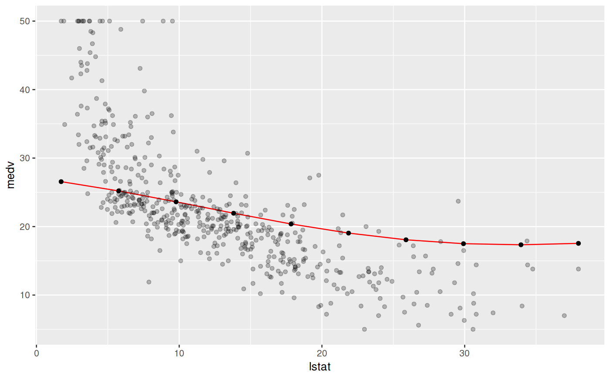

Estimate how the learned prediction function is affected by one or more features. For a learned function f(x) where x is partitioned into x_s and x_c, the partial dependence of f on x_s can be summarized by averaging over x_c and setting x_s to a range of values of interest, estimating E_(x_c)(f(x_s, x_c)). The conditional expectation of f at observation i is estimated similarly. Additionally, partial derivatives of the marginalized function w.r.t. the features can be computed.
generatePartialDependenceData(obj, input, features = NULL, interaction = FALSE, derivative = FALSE, individual = FALSE, fun = mean, bounds = c(qnorm(0.025), qnorm(0.975)), uniform = TRUE, n = c(10, NA), ...)
Arguments
| obj | (WrappedModel) |
|---|---|
| input | (data.frame | Task) |
| features | character |
| interaction | ( |
| derivative | ( |
| individual | ( |
| fun |
A function which operates on the output on the predictions made on the |
| bounds | ( |
| uniform | ( |
| n | ( |
| ... | additional arguments to be passed to mmpf::marginalPrediction. |
Value
PartialDependenceData. A named list, which contains the partial dependence, input data, target, features, task description, and other arguments controlling the type of partial dependences made.
Object members:
data.frame
Has columns for the prediction: one column for regression and
survival analysis, and a column for class and the predicted probability for classification as well
as a a column for each element of features. If individual = TRUE then there is an
additional column idx which gives the index of the data that each prediction corresponds to.
TaskDesc
Task description.
Target feature for regression, target feature levels for classification, survival and event indicator for survival.
character
Features argument input.
(logical(1))
Whether or not the features were interacted (i.e. conditioning).
(logical(1))
Whether or not the partial derivative was estimated.
(logical(1))
Whether the partial dependences were aggregated or the individual curves are retained.
References
Goldstein, Alex, Adam Kapelner, Justin Bleich, and Emil Pitkin. “Peeking inside the black box: Visualizing statistical learning with plots of individual conditional expectation.” Journal of Computational and Graphical Statistics. Vol. 24, No. 1 (2015): 44-65.
Friedman, Jerome. “Greedy Function Approximation: A Gradient Boosting Machine.” The Annals of Statistics. Vol. 29. No. 5 (2001): 1189-1232.
See also
Other partial_dependence: plotPartialDependence
Other generate_plot_data: generateCalibrationData,
generateCritDifferencesData,
generateFeatureImportanceData,
generateFilterValuesData,
generateLearningCurveData,
generateThreshVsPerfData,
plotFilterValues
Examples
lrn = makeLearner("regr.svm") fit = train(lrn, bh.task) pd = generatePartialDependenceData(fit, bh.task, "lstat")#>lrn = makeLearner("classif.rpart", predict.type = "prob") fit = train(lrn, iris.task) pd = generatePartialDependenceData(fit, iris.task, "Petal.Width") plotPartialDependence(pd, data = getTaskData(iris.task))